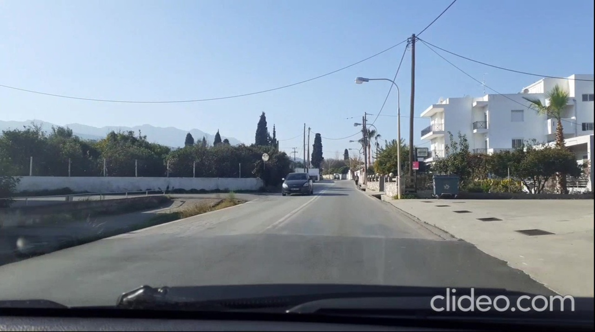

Image Analysis
Lets take the above image as an example. Notable information about the image:
- The image shows the drivers point of view.
- The car is on a road with two lanes.
- A car is approaching from the opposite lane.
In the first step we will process the image to predict the lane edges.To achieve that we will use some of openCV's built in methods.
With cv2.cvtColor and cv2.GaussianBlur we convert the image to grayscale and then blur it to reduce noise.
Finally with cv2.Canny(blur,50,150) we mark the areas where the gradient is bigger than 50.
These steps essentially isolate the edges in the image.
The image still contains a lot of information that is not needed. We have to isolate the part of the image where to road is located.

Looking at the image part we can locate a long line that represents the right side of the lane. The road in the image is old and the left line separating the lanes is not visible. In the above exapmple it is rather easy for the human eye to detect the straight line representing the right side of the road however a computer does not process visual data in the same way.
Using the HoughLinesP method we can get a list of all continous lines in the image aswell. By tweaking the function's parameters we can set the minimum line length and the maximum gap allowed between two points for them to be considered a line. After getting the list of lines we can process them until we arrive at the lines most likely to represent the side of a lane. Some of those processing techiques include:
- Comparing multiple smaller lines with the same angle to check if they belong to a bigger line.
- Discarding lines with too small or too high angles.
- Predicting the expected position of the left side of a lane based on the right (or the reverse).
The above image shows the results of the predictions.
Combining lane detection with object detection using YOLOv5
Using a convolutional neural network such as the YOLOv5 (You Only Look Once) model we can predict the location of cars in the image. Using this information we can then estimate the car distance from the driver aswell as the lanes the detected cars are currently on.

The full code of the project can be found in my github repo.